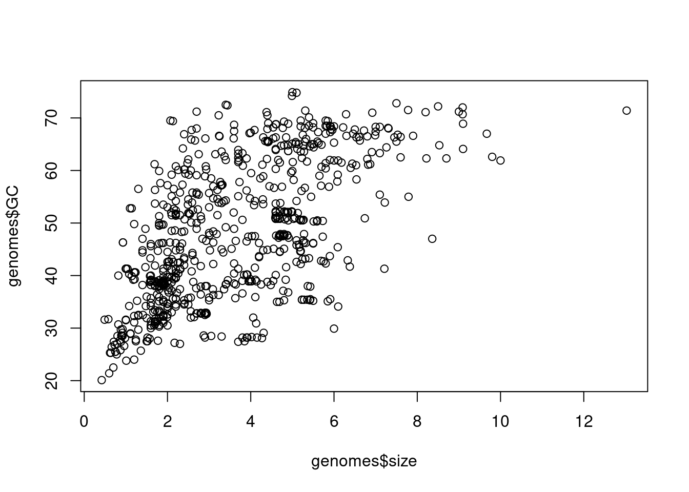
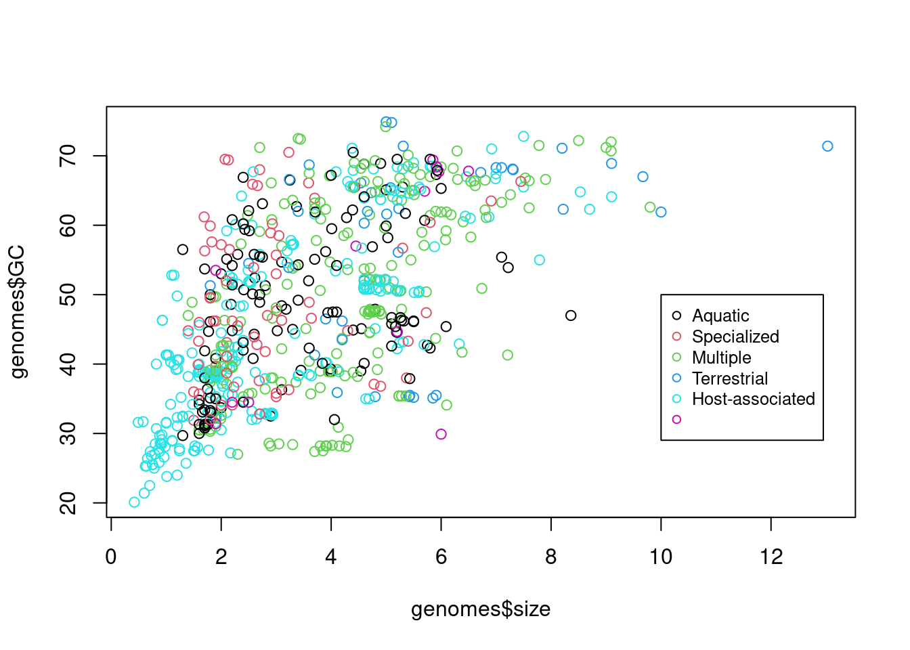
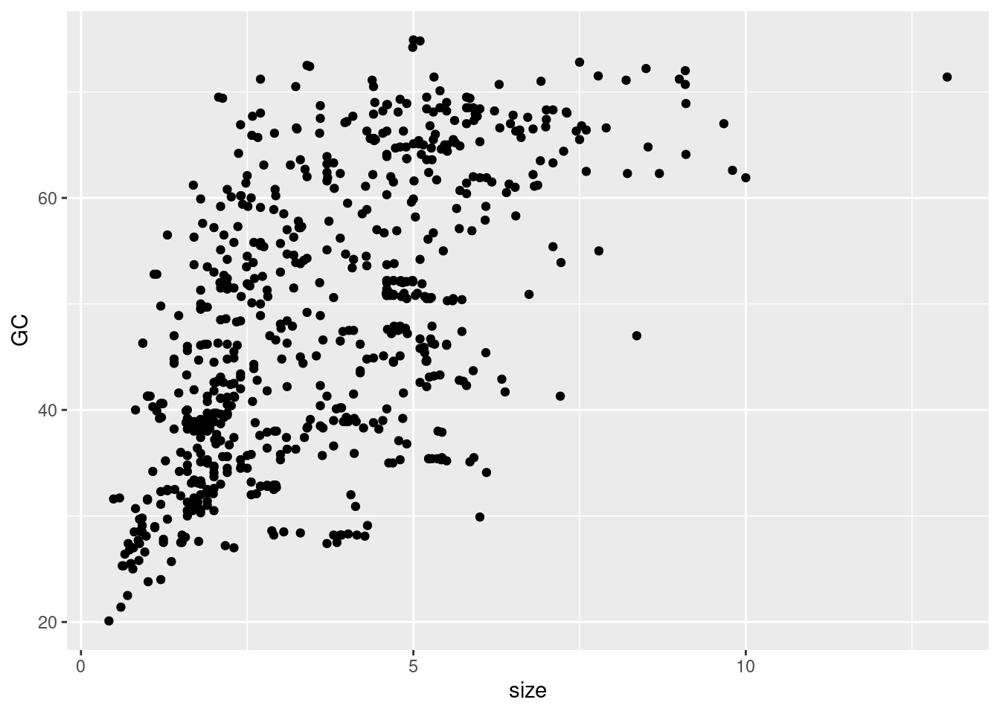
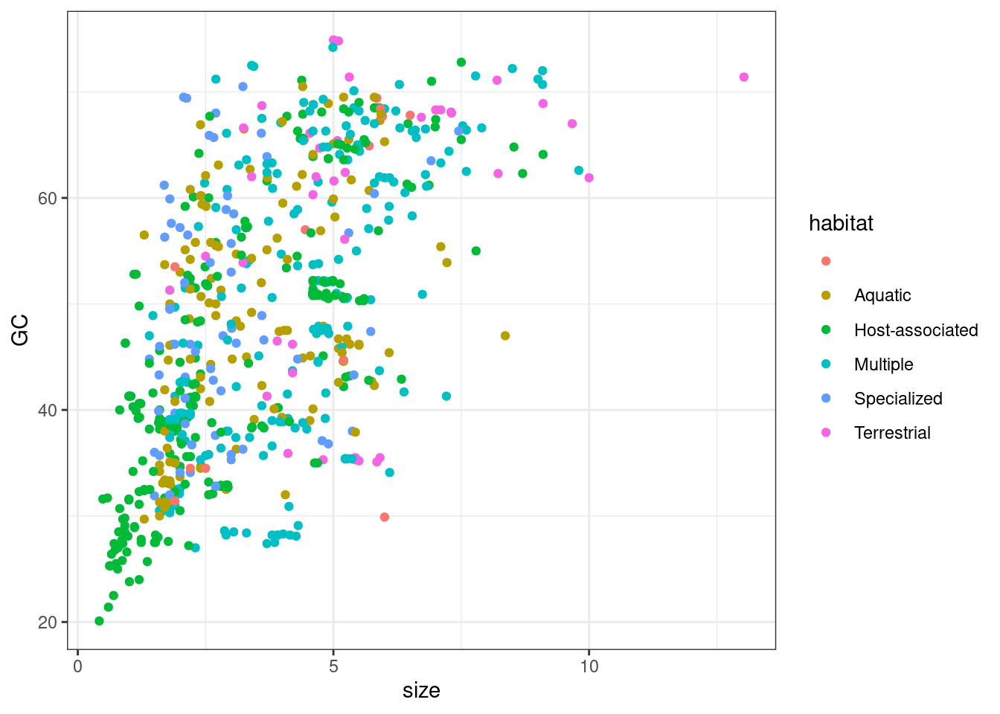
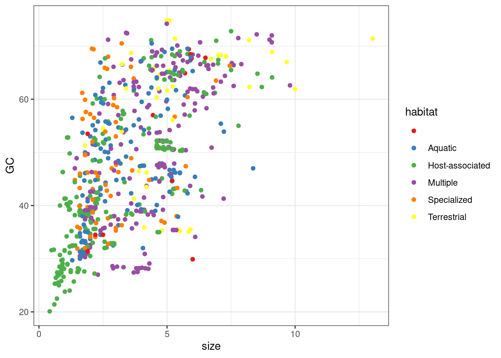
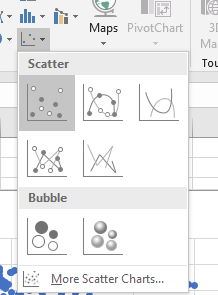
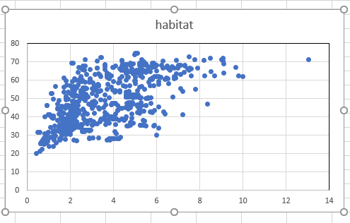
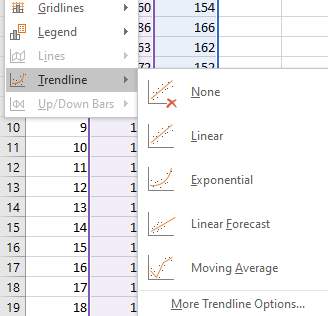
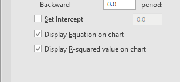

Wykres kropkowy albo wykres rozrzutu (ang. scatterplot). Umożliwia wizualizację zależności pomiędzy dwiema zmiennymi ilościowymi.
5.1 Jak narysować wykres rozrzutu w R?
Wczytaj dane do R korzystając z Import Dataset lub odpowiedniej funkcji. Więcej informacji w Jak wczytać dane do R
5.1.1 Base R
Do narysowanie wykresu rozrzutu można użyć funkcji plot, w której jako dwa pierwsze argumenty należy podać kolumny tabeli z danymi np. plot(tabela$kolumna_1, tabela$kolumna_2)
# wczytanie danych dotyczących wielkości genomów bakteryjnychgenomes <-read.table('data/genomes.txt')# wykres zależności wielkości genomu od procenta par GCplot(genomes$size, genomes$GC)

# dodanie koloru według środowiska życia i legendyplot(genomes$size, genomes$GC, col =factor(genomes$habitat, levels =c("Aquatic", "Specialized", "Multiple", "Terrestrial", "Host-associated", "")))legend(10, 50, legend=c( "Aquatic", "Specialized", "Multiple", "Terrestrial", "Host-associated", ""),col =palette()[1:6], cex =0.8, pch =21)

5.1.2 ggplot2
Do narysowania wykresu rozrzutu wykorzystaj funkcje ggplot i geom_point.
W funkcji ggplot podaj nazwę tabeli i nazwę kolumn z danymi: ggplot(nazwa_tabeli, aes(x = nazwa_kolumny_1, y = nazwa_kolumny_2)). Potem dodaj geom_point(). W aes możesz też podać trzecią kolumnę, która pozwoli na pokolorowanie punktów według zmiennej jakościowej. Legenda zostanie utworzona automatycznie.
# wczytanie bibliotekilibrary(ggplot2)# wykres zależności wielkości genomu od procenta GCggplot(genomes, aes(x = size, y = GC))+geom_point()

# ten sam wykres pokolorowany według środowiska życiaggplot(genomes, aes(x = size, y = GC, color = habitat))+geom_point()+theme_bw()

# zmiana skali koloru na Rcolorbrewerggplot(genomes, aes(x = size, y = GC, color = habitat))+geom_point()+theme_bw()+scale_color_brewer(palette ='Set1')

5.1.3 Dodanie linii trendu
Aby do wykresu narysowanego przy pomocy pakietu ggplot2 dodać linię trendu wystarczy do wcześniejszego kodu dodać funkcję geom_smooth. Domyślnie linia trendu zostanie dopasowane przy pomocy algorytmu loess, można to zmienić na model liniowy przy pomocy argumentu model = 'lm'. Szary obszar wokół linii to 95% przedział ufności.
Aby obliczyć parametry modeli liniowego (a i b) można wykorzystać funkcję lm.
model <-lm(Wife ~ Husband, data = data_trend)# wyświetl model, b - Intercept, a - Husbandsummary(model)
Call:
lm(formula = Wife ~ Husband, data = data_trend)
Residuals:
Min 1Q Median 3Q Max
-19.4685 -3.9208 0.8301 3.9538 11.1287
Coefficients:
Estimate Std. Error t value Pr(>|t|)
(Intercept) 41.93015 10.66162 3.933 0.000161 ***
Husband 0.69965 0.06106 11.458 < 2e-16 ***
---
Signif. codes: 0 '***' 0.001 '**' 0.01 '*' 0.05 '.' 0.1 ' ' 1
Residual standard error: 5.928 on 94 degrees of freedom
Multiple R-squared: 0.5828, Adjusted R-squared: 0.5783
F-statistic: 131.3 on 1 and 94 DF, p-value: < 2.2e-16
5.2 Jak narysować wykres rozrzutu w Excel?
Aby narysować wykres rozrzutu w programie Excel zaznacz dane w arkuszu, a następnie wybierz wykres scatter z zakładki Insert. Jeżeli chcesz, aby na wykresie znalazły się kropki w różnych kolorach zaznacz kilka kolumn.

Powinieneś otrzymać wykres, który wygląda podobnie do przykładu. Domyślnie oś X i Y będą zaczynać się od 0. Dostosuj minimalną wartość osi, jeżeli twoje dane nie zawierają wartości 0. Przy bardzo dużej liczbie punktów wykres może stać się nieczytelny. Aby tego uniknąć zastosuj punkty puste w środku albo częściowo przezroczyste.

5.2.1 Dodanie linii trendu
Do wykresu rozrzutu można dodać linię trendu korzystając z opcji Trendline. W przykładzie wybiorę model liniowy (Linear).

Równanie dla modelu liniowego można wyświetlić bezpośrednio na wykresie wybierając odpowiednią opcję

Powinieneś otrzymać wykres, który wygląda podobnie do przykładu.